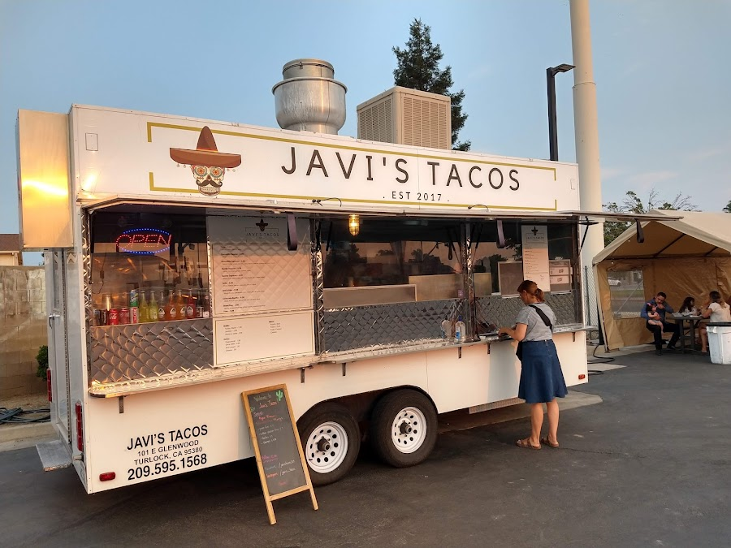
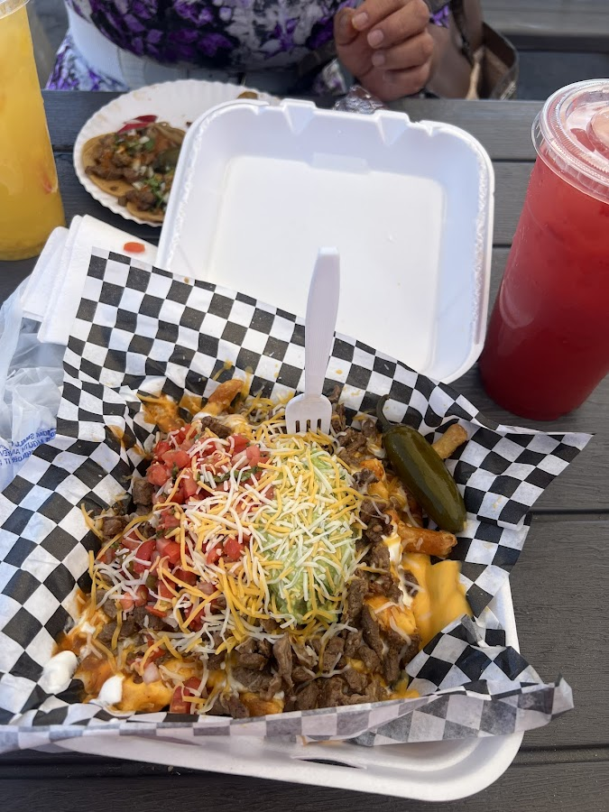
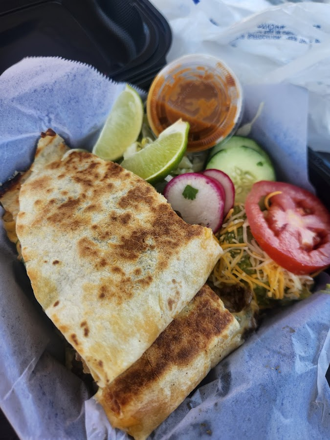
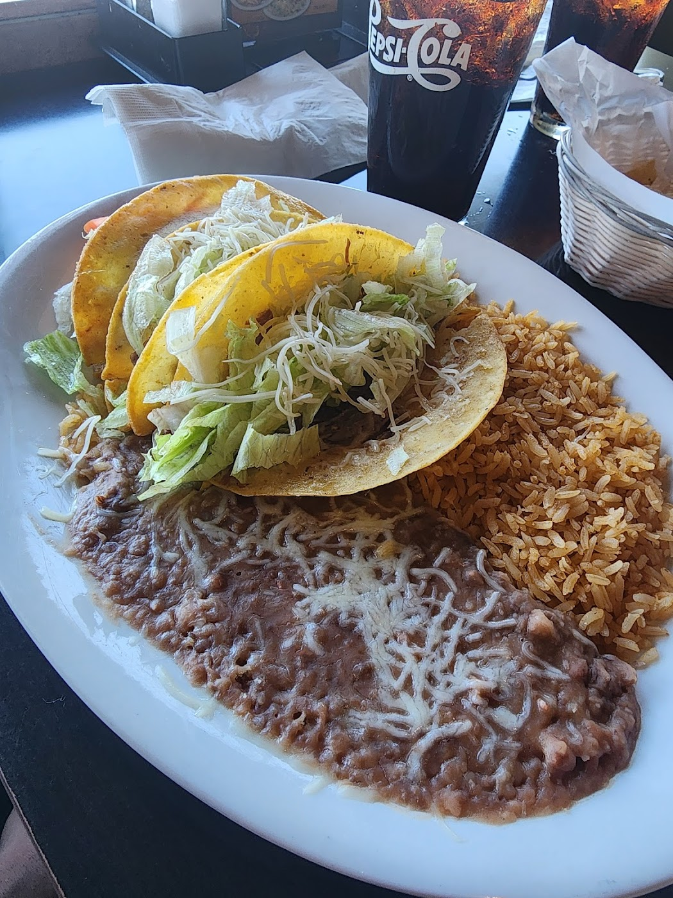

Tacos packed with meat, asada fries piled high, and salsas that hit. Javi's has been Turlock's go-to street taquería since 2017 — pull up hungry.

Family-recommended, soccer-game approved, and built on one idea: pile it with meat and don't skimp on the salsa.
What started rolling through Turlock in 2017 has become a local fixture — the kind of truck people drive across town for. Order a plate of crunchy shredded beef, the Javi's Special built to share, or our famous loaded asada fries with everything on top.
Big portions, fair prices, and salsas folks rave about. Hand it through the window and you'll get why this place keeps getting passed down from family to family.



Recommended by different family members — we came in for a soccer game from Stockton and the service was excellent. The crunchy shredded beef and the Javi's Special were delicious. The Javi's Special is definitely a plate to share.
We had the Quesadilla Supreme with carne asada and a carne asada taco. Portion size great for the price, and the salsas that came with our food were great.
Would always see this truck passing by during work, so I thought I'd try it. Ordered an asada and a pastor taco — flavor is there and I really liked how they packed it with meat.
Call ahead or roll up to the window.
📞 (209) 595-1568